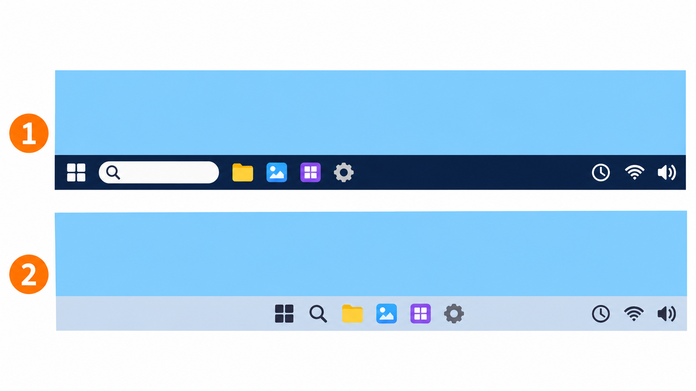
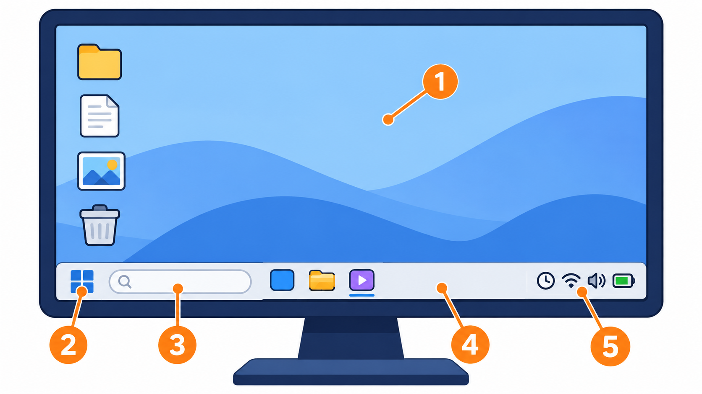
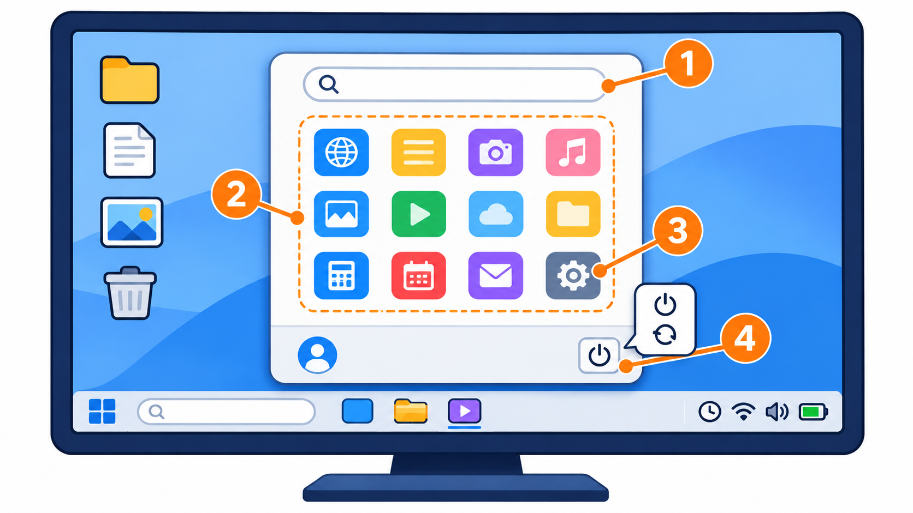
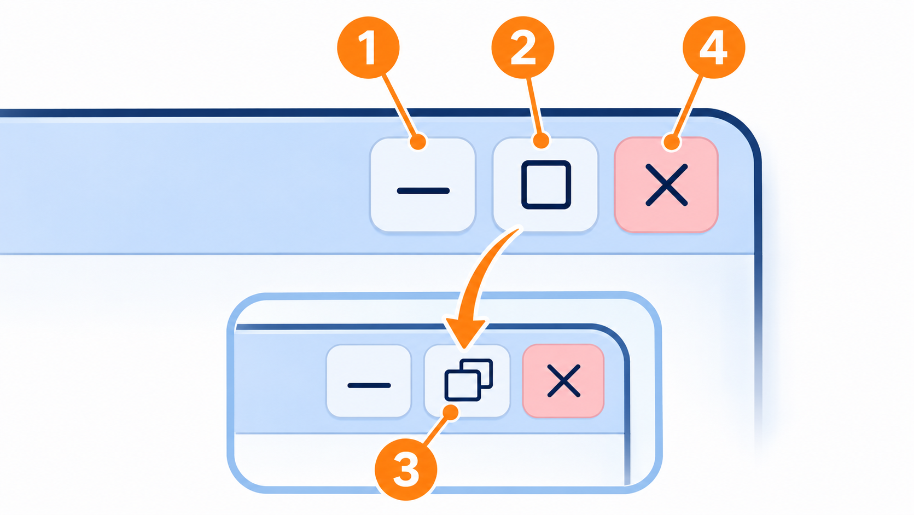
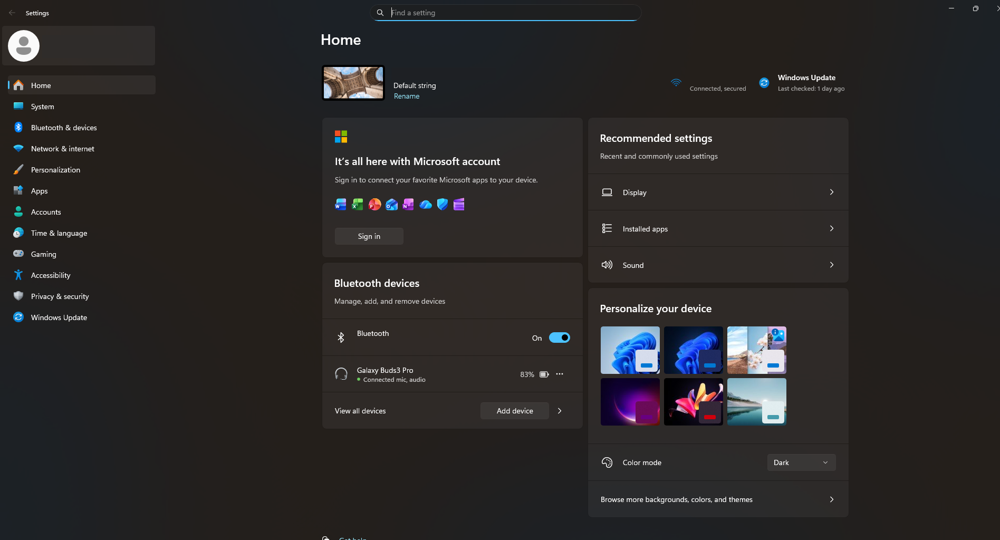
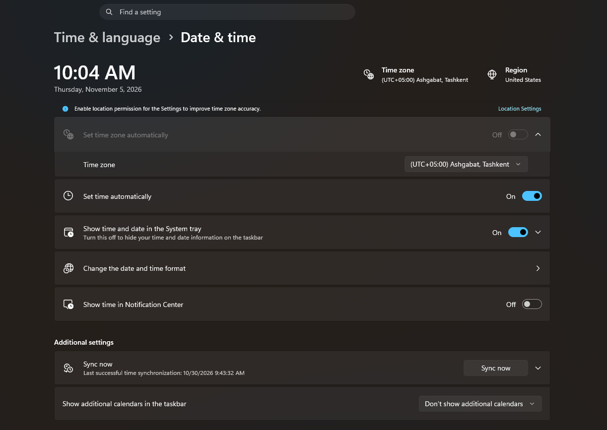
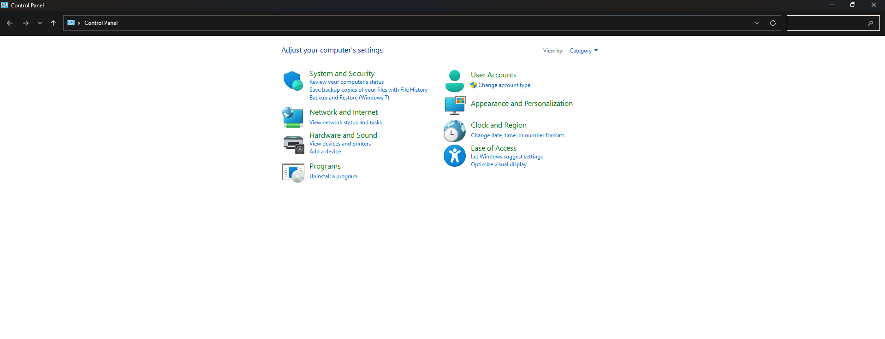
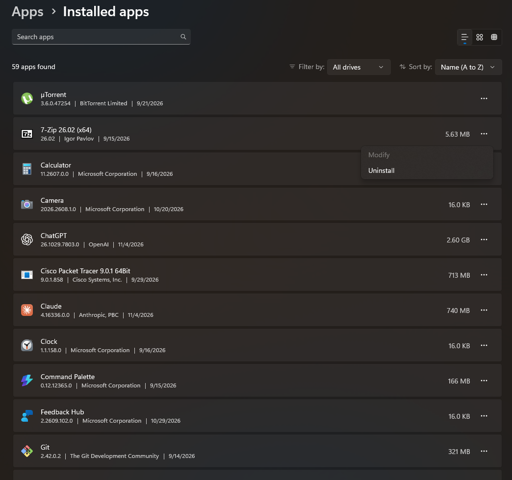

2. Operatsion tizimlar va Windows muhitida ishlash
I bob. Kompyuter savodxonligi va arxitekturasi · 1 ta nazariy dars
Ma'ruza taqdimoti: Zamonaviy kompyuterlar va Windows (PDF)
Bu sahifa darsdan keyin takrorlash uchun. Taqdimot ikki mavzuni birga o'z ichiga oladi. Kompyuter turlari va qismlari (CPU, RAM, SSD, kiritish va chiqarish qurilmalari) 1-mavzu sahifasida tushuntirilgan. Bu sahifada esa taqdimotning ikkinchi qismi: operatsion tizim, Windows muhiti, oynalar, sozlamalar, sana, vaqt va til, Control Panel hamda dasturlarni o'rnatish va o'chirish.
Operatsion tizim
Operatsion tizim nima
Kompyuterda uch tomon bor: siz (foydalanuvchi), dasturlar va qurilmalar (protsessor, xotira, ekran, klaviatura). Dasturlar qurilmalar bilan to'g'ridan-to'g'ri gaplashmaydi: ular buni operatsion tizim orqali qiladi.
Operatsion tizim (Operating System, qisqacha OS) — foydalanuvchi, dasturlar va kompyuter qurilmalari o'rtasidagi vositachi.
Masalan, siz Word'da hujjatni chop etish tugmasini bosasiz. Word printer bilan o'zi gaplashmaydi: u buni operatsion tizimga aytadi, operatsion tizim esa printerga yuboradi. Rasmdagi o'rtadagi yordamchi — operatsion tizim.
Kompyuter yoqilganda operatsion tizim yuklanadi, ya'ni xotiradan RAM'ga o'tib ishga tushadi. Boshqa hamma dasturlar undan keyin, uning yordamida ishlaydi.
Operatsion tizimning vazifalari
| Vazifa | Nima qiladi |
|---|---|
| Qurilmalarni boshqarish | klaviatura, sichqoncha, ekran, printer bilan ishlaydi |
| Fayllarni boshqarish | fayllarni xotirada saqlaydi, topadi va ochadi |
| Dasturlarni ishga tushirish | dasturni ochadi va unga protsessor vaqtini hamda RAM'dan joy beradi |
| Foydalanuvchilarni boshqarish | bitta kompyuterda har kimning o'z akkaunti va fayllari bo'ladi |
| Xavfsizlikni ta'minlash | parol so'raydi, begona odamni va zararli dasturlarni to'sishga yordam beradi |
Akkaunt — kompyuter yoki saytdagi shaxsiy hisobingiz: ismingiz, parolingiz va sozlamalaringiz.
Windows'da ko'radigan ish stoli, Start menyusi va Settings — bularning hammasi operatsion tizimning o'zi.
Operatsion tizim turlari
| Operatsion tizim | Qayerda ishlaydi |
|---|---|
| Windows | ko'pchilik kompyuter va noutbuklar |
| Linux | serverlar va ba'zi kompyuterlar |
| macOS | Apple kompyuterlari (MacBook, iMac) |
| Android | ko'pchilik smartfon va planshetlar |
| iOS | Apple telefonlari (iPhone) |
Telefon ham kompyuter, shuning uchun unda ham operatsion tizim bor. Biz darslarda Windows bilan ishlaymiz.
Savol. Windows nima: A) CPU, B) SSD, C) Operatsion tizim?
Javob. C) Operatsion tizim. CPU buyruqlarni bajaradigan qurilma, SSD esa ma'lumotni saqlaydigan qurilma. Windows esa qurilma emas, dastur: u qurilmalarni boshqaradi.
Windows muhiti
Kompyuteringizda qaysi Windows?
Maktab kompyuterlarida Windows 10 yoki Windows 11 bo'lishi mumkin. Ularning ko'rinishi biroz farq qiladi.
- Taskbar'ga (ekranning pastidagi uzun chiziqqa) qarang. Windows 11'da Start va ikonkalar odatda pastda, o'rtada turadi. Windows 10'da Start chap burchakda.
- Aniq bilish uchun: Search'ga (Taskbar'dagi lupa ikonkasi yoki qidiruv qatori)
winverdeb yozing va Enter bosing. Ochilgan oynada Windows versiyasi yozilgan.

- Windows 10: Start chapda.
- Windows 11: Start o'rtada.
Windows yozuvlari inglizcha yoki ruscha bo'lishi mumkin; bu interfeys tili. Interfeys — dasturdagi tugma, menyu va yozuvlar. Bu sahifada nomlar inglizcha, yonida ruschasi berilgan.
Windows ish stolining asosiy elementlari
1-mavzuda RAM'ni ish stoliga o'xshatgan edik. Bu boshqa narsa: bu yerda ish stoli (Desktop) — ekrandagi joy.
Windows yoqilganda ko'radigan birinchi ekraningiz — ish stoli. Ekranda beshta asosiy element bor:
| № | Element | RU | Nima |
|---|---|---|---|
| 1 | Desktop (ish stoli) | Рабочий стол | oynalar orqasidagi asosiy maydon; unda dastur va fayllarning ikonkalari turadi |
| 2 | Start | Пуск | ekranning pastidagi Windows ikonkasi; bossangiz Start menyusi ochiladi |
| 3 | Search (qidiruv) | Поиск | Taskbar'dagi lupa ikonkasi yoki qidiruv qatori; dastur, fayl yoki sozlamani nomi bo'yicha topadi |
| 4 | Taskbar (vazifalar paneli) | Панель задач | ekranning pastidagi uzun chiziq; ochiq dasturlar shu yerda ko'rinadi |
| 5 | Notification Area (bildirishnomalar joyi) | Область уведомлений | Taskbar'ning o'ng burchagi: soat, Wi-Fi, ovoz, batareya va xabarlar |

- Desktop — ish stoli
- Start
- Search — qidiruv
- Taskbar — vazifalar paneli
- Notification Area — bildirishnomalar joyi
Ikonka — dastur yoki faylni bildiruvchi kichik rasm. Ish stolida ikonkani ikki marta bosasiz. Taskbar va Start menyusida bir marta bosish yetarli.
Start menyusi
Start tugmasini bossangiz, Start menyusi ochiladi. U orqali:
- dasturlarni ochasiz: ro'yxatdan dasturni tanlab bosasiz;
- qidirasiz: menyu ochilgach dastur nomini yoza boshlasangiz, Windows uni topib beradi;
- Settings'ga (sozlamalarga, RU: Параметры) kirasiz: tishli g'ildirak ikonkasi;
- kompyuterni o'chirasiz yoki qayta yoqasiz: quvvat (⏻) ikonkasi (RU: Выключение).
Windows 10'da Settings va quvvat ikonkalari Start menyusining chap ustunida. Windows 11'da Settings — menyudagi ilovalar orasida, quvvat ikonkasi esa o'ng pastki burchakda.

- Qidiruv
- Dasturlar
- Settings
- Shut down / Restart
Shut down (RU: Завершение работы) kompyuterni butunlay o'chiradi. Restart (RU: Перезагрузка) uni o'chirib, darhol qayta yoqadi. Kompyuter qotib qolsa yoki yangilanishdan keyin Restart so'rasa, shu kerak bo'ladi.
Oynalar va sozlamalar
Oyna tugmalari
Har bir dastur o'z oynasida ochiladi. Oynaning o'ng yuqori burchagida uchta tugma bor:
| Tugma | Nomi | RU | Nima qiladi |
|---|---|---|---|
_ |
Minimize (yig'ish) | Свернуть | oynani yashiradi; dastur Taskbar'da qoladi va ishlashda davom etadi |
☐ |
Maximize (kattalashtirish) | Развернуть | oyna butun ekranni egallaydi va tugma ikki kvadratga aylanadi (Restore) |
| ikki kvadrat | Restore (tiklash) | Свернуть в окно | oynani avvalgi o'lchamiga qaytaradi |
✕ |
Close (yopish) | Закрыть | oynani yopadi; odatda dastur ham to'xtaydi |

- Minimize
- Maximize
- Restore
- Close
Yig'ilgan oynani qaytarish uchun Taskbar'dagi dastur ikonkasini bosing.
Savol. Siz Word'da yozyapsiz va brauzerga o'tmoqchisiz. Keyin Word'ga uni qayta ochmasdan qaytmoqchisiz. Qaysi tugmani bosasiz: Minimize yoki Close?
Javob. Minimize. U oynani faqat yashiradi, Word esa ochiq qoladi: Taskbar'dagi Word ikonkasini bossangiz, oyna qaytadi. Close esa Word'ni yopadi va uni qaytadan ochishga to'g'ri keladi.
Settings (sozlamalar)
Settings — Windows'ning sozlamalar oynasi. Uni Start menyusidan ochasiz.
Settings'da kerakli bo'limni topishning eng oson yo'li — Search. Bu Windows 10'da ham, Windows 11'da ham bir xil ishlaydi.
Qayerda qidirasiz: Taskbar'dagi lupa ikonkasi yoki qidiruv qatori. Agar u ko'rinmasa, Start'ni bosing va darhol yoza boshlang. Qidiruv o'sha joyda ochiladi.
Nima deb yozasiz: interfeys tilida yozing. Inglizcha Windows'da inglizcha, ruscha Windows'da ruscha.
| Nima kerak | Interfeys inglizcha | Interfeys ruscha |
|---|---|---|
| Wi-Fi'ga ulanish | wi-fi |
wi-fi |
| Bluetooth qurilma ulash | bluetooth |
bluetooth |
| Ekran yorug'ligi | brightness |
яркость |
| Ekran o'lchami va sozlamalari | display |
дисплей |
| Ovoz | sound |
звук |
| Akkaunt va parol | accounts |
учетные записи |
| Dasturni o'chirish | add or remove programs |
установка и удаление программ |
| Sana va vaqt | date and time |
дата и время |
| Til | language |
язык |
| Windows yangilanishi | windows update |
центр обновления |
| Control Panel | control panel |
панель управления |
| Windows versiyasi | winver |
winver |

Rasmda Windows 11'dagi Settings oynasi. Chap ro'yxatda bo'limlar bor: System, Network & internet, Apps, Accounts, Time & language, Windows Update. Yuqoridagi Find a setting qatori ham qidiruv: unga ham yozish mumkin.
Windows Update'ni o'chirmang: yangilanishlar xatolarni tuzatadi va kompyuterni xavfsizroq qiladi.
Sana, vaqt va til
Nega kerak: kompyuter soati noto'g'ri bo'lsa, ba'zi saytlar ochilmaydi va fayllar noto'g'ri sana bilan saqlanadi.
Vaqtni to'g'rilash
- Search'ga
date and time(ruscha:дата и время) deb yozing va Date & time settings (Параметры даты и времени) ni oching. Boshqa yo'l: Taskbar'dagi soatni sichqonchaning o'ng tugmasi bilan bosib, Adjust date and time (Настроить дату и время) ni tanlang. Windows 10'da bu yozuv biroz boshqacha bo'lishi mumkin. - Set time automatically (Установить время автоматически) ni yoqing. Shunda Windows vaqtni internetdan oladi.
- Time zone (Часовой пояс) — vaqt mintaqasi: O'zbekiston uchun (UTC+05:00) Ashgabat, Tashkent (Ашхабад, Ташкент).

Administrator — kompyuterda hamma narsani o'zgartirishga ruxsati bor akkaunt. Maktab kompyuterida vaqtni o'zgartirish uchun Windows administrator parolini so'rashi mumkin. Shunda o'qituvchiga ayting.
Til: ikki xil narsa
| Nima | Qayerda | Nimani o'zgartiradi |
|---|---|---|
| Klaviatura tili | Taskbar'ning o'ng tomonidagi ENG / РУС yozuvi |
qaysi harflar yozilishini. O'zbek lotin harflarida yozish uchun odatda ENG ishlatiladi |
| Interfeys tili | Search: language / язык → Windows display language (Язык интерфейса Windows) |
Windows'dagi hamma menyu va tugmalarning tilini |
Klaviatura tilini almashtirish uchun ENG / РУС yozuvini bosing va tilni tanlang yoki Win + Space tugmalarini bosing. Win — klaviaturadagi Windows ikonkasi chizilgan tugma, Space — probel. Maktab kompyuterida interfeys tilini o'zgartirmang: menyular boshqa tilga o'tadi va keyingi o'quvchi qiynaladi.
Control Panel
Control Panel (boshqaruv paneli, RU: Панель управления) — Windows'ning eski sozlamalar oynasi. Yangi Windows'da ko'p sozlamalar Settings'ga ko'chgan, lekin Control Panel hali ham bor va ba'zi ishlar uchun kerak bo'ladi.
Ochish: Search'ga control panel (ruscha: панель управления) deb yozing va natijani bosing. Start menyusida u ro'yxatning chuqur joyida, shuning uchun qidiruv eng oson yo'l.
Oyna ochilganda o'ng yuqorida View by: Category (Просмотр: Категория) tanlangan bo'lsin. Shunda bo'limlar guruhlab ko'rsatiladi:
| Bo'lim (EN) | RU | Nima uchun |
|---|---|---|
| Programs → Uninstall a program | Программы → Удаление программы | dasturni o'chirish |
| Clock and Region | Часы и регион | sana, vaqt va mintaqa |
| Hardware and Sound | Оборудование и звук | printer, ovoz |
| User Accounts | Учетные записи пользователей | akkauntlar |

Settings va Control Panel'dagi ko'p sozlamalar bir xil. Qaysi biridan foydalanish ixtiyoriy.
Dastur o'rnatish va o'chirish
Dastur o'rnatish — dasturni kompyuterga yozib, ishlashga tayyorlash.
O'rnatishning ikki yo'li:
- Microsoft Store — Windows'dagi rasmiy dasturlar do'koni. Uni oching, dasturni qidiring va Get yoki Install (Получить / Установить) ni bosing.
- Dasturning rasmiy sayti — o'rnatuvchi faylni yuklab oling va ishga tushiring.
O'rnatishda Windows "Do you want to allow this app to make changes to your device?" («Разрешить этому приложению вносить изменения на вашем устройстве?») deb so'raydi. Dastur rasmiy manbadan bo'lsa, Yes (Да) ni bosing. Qayerdanligini bilmasangiz, No (Нет) ni bosing.
Dasturni o'chirish. Eng oson yo'l: Search'ga add or remove programs (ruscha: установка и удаление программ) deb yozing. Ochilgan ro'yxatda dasturni toping:
- Windows 11: dastur yonidagi uch nuqta (
…) → Uninstall (Удалить). - Windows 10: dasturni bosing → Uninstall (Удалить).

Boshqa yo'l: Control Panel → Programs → Uninstall a program, dasturni tanlang va Uninstall ni bosing.
Ish stolidagi ikonka ko'pincha faqat yorliq (Shortcut, RU: Ярлык): dasturga olib boradigan ko'rsatkich. Yorliqni o'chirsangiz, dastur kompyuterda qoladi.
Yorliq — yo'l ko'rsatkichi, dastur — uy. Ko'rsatkichni olib tashlasangiz, uy joyida qoladi.
Dasturlarni faqat ishonchli manbalardan yuklang: dasturning rasmiy saytidan yoki Microsoft Store'dan. Notanish saytlardagi "bepul" dasturlar ichida zararli dastur bo'lishi mumkin. Bu haqda 6-mavzuda batafsil gaplashamiz.